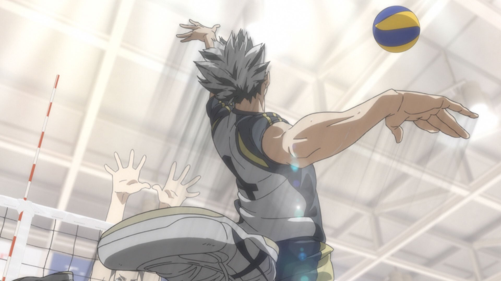

Our first character is Mr. Kotaro Bokuto!! Bokuto is a third-year student at Fukurodani Academy, stands at 6'1",
and is their starting outside hitter and has been their ace for the past three years. Out of raw volleyball skill,
this man is the best out of all three characters that I will be featuring. He has been acknowledged as one of the
top five aces in Japan, barely missing the top three.
Other than being an absolute beast on the court, this man is the one of the FUNNIEST people in all of Haikyuu and
serves as the self-proclaimed mentor of the main character of the series, Hinata Shoyo. He is insanely passionate
about the sport of volleyball and is an important figure in the protagonist's journey of technical development.
The best part about Bokuto is that while he inspirationally carries the Fukurodani team on his back, he's also one
of the most chaotic and energetic characters and I love him with all my heart. Look at he^^ very precious.